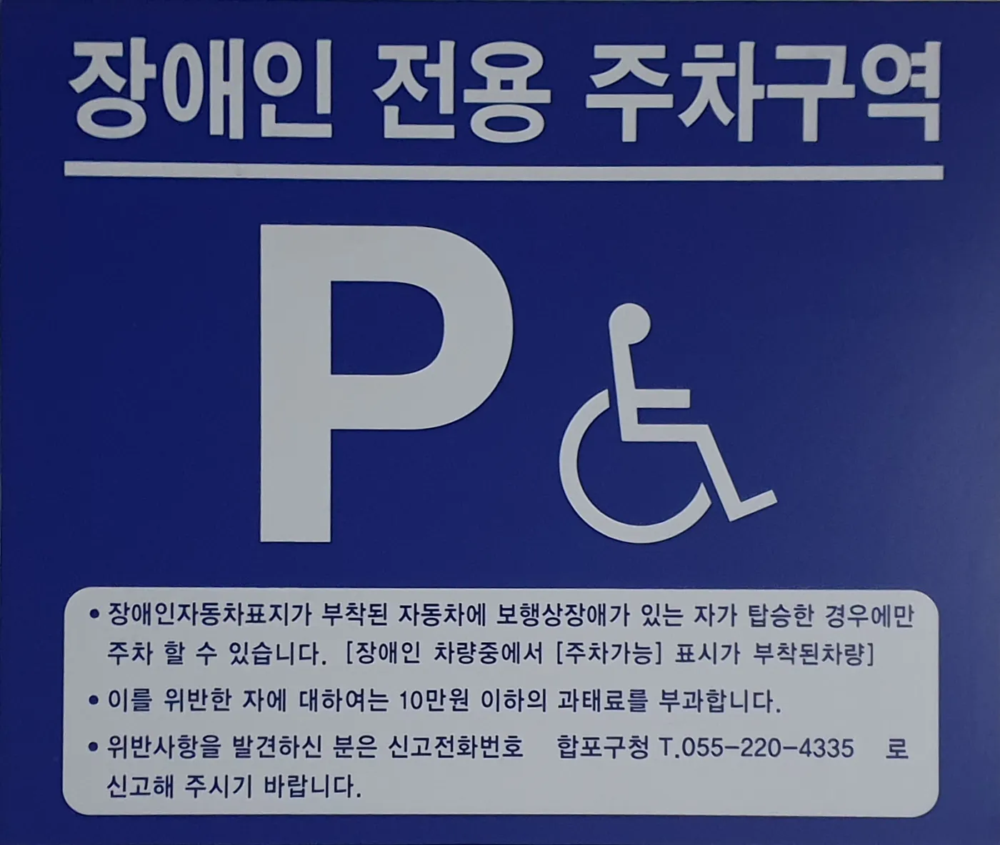
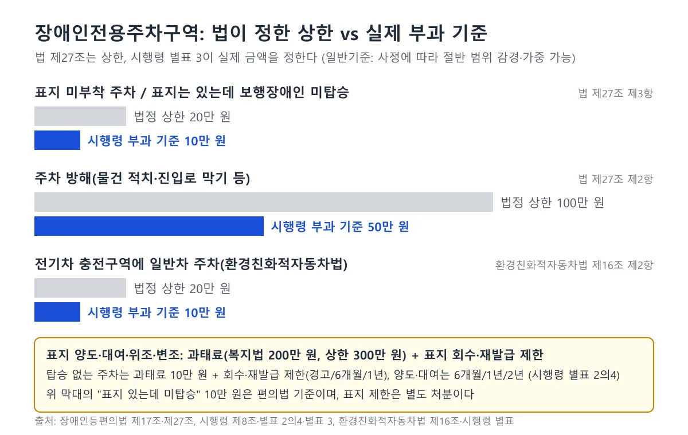
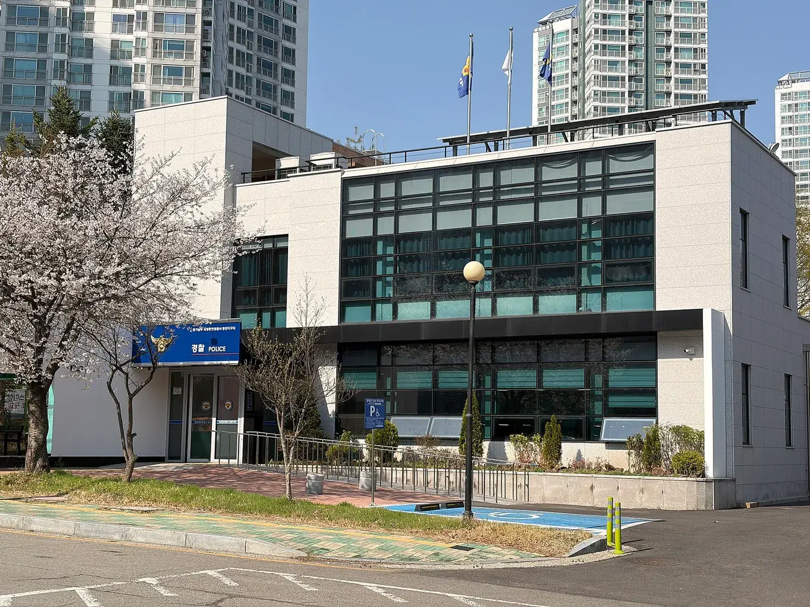
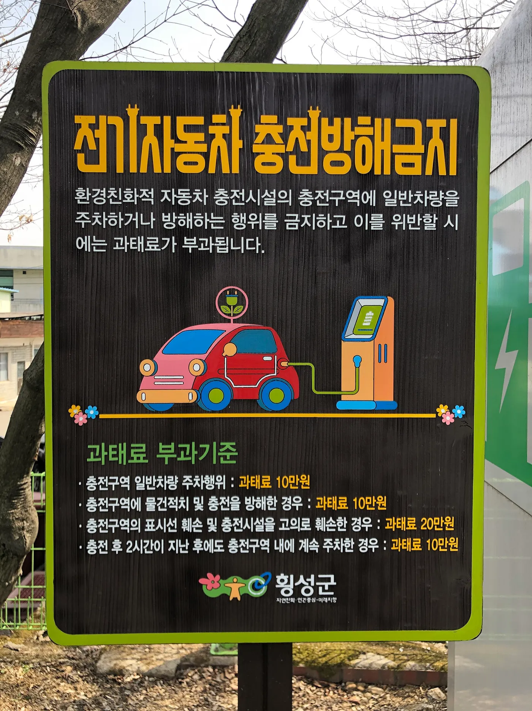
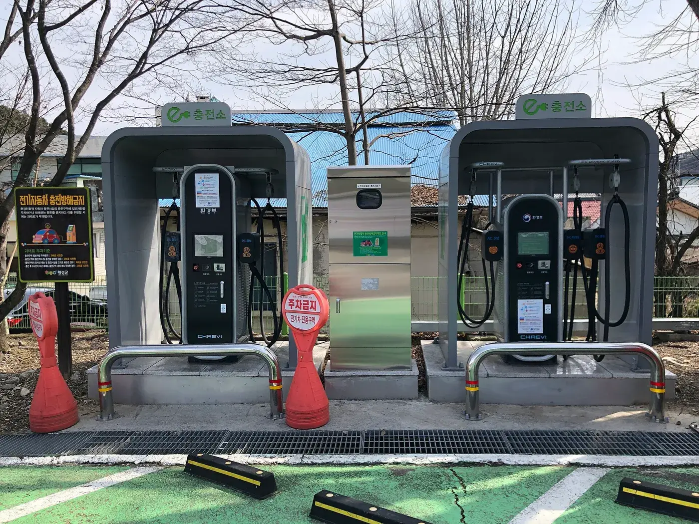
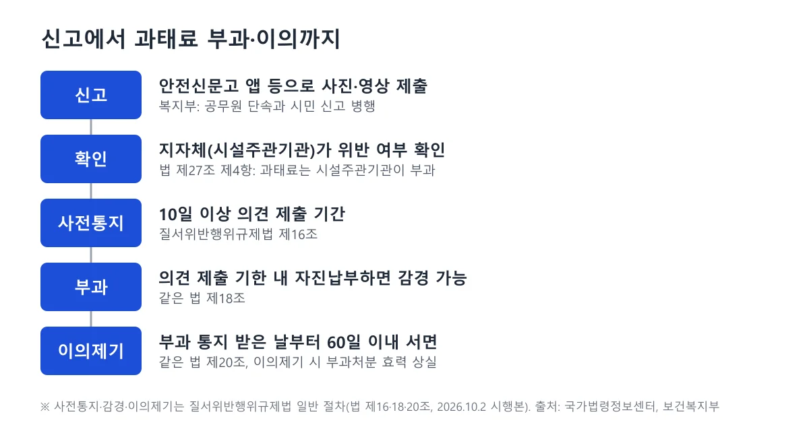

▲ 실내 주차장의 파란색 장애인 주차면과 전기차 충전기(위키미디어 파일명 기준 서울역 일대). 장애인 구역과 충전구역은 근거 법이 다르다 ⓒ Immanuelle, Wikimedia Commons (CC BY 4.0)
장애인전용주차구역 위반은 과태료 10만 원과 50만 원으로 알려져 있다. 그런데 법 조문을 열면 숫자가 두 겹이다. 법 제27조는 "20만 원 이하", "100만 원 이하"라고 적고, 실제 금액은 시행령 별표 3이 정한다. 아파트 단지 안에 있는 구역에도 같은 규정이 적용되는지, 전기차 충전구역과 겹치면 어느 법이 우선인지, 표지를 빌려 쓰면 과태료인지 표지 회수인지도 한 번에 정리된 곳이 드물다. 이 글은 국가법령정보센터의 법률·시행령·시행규칙 원문(2026년 10월 6일 조회)을 직접 대조하고, 보건복지부 안내와 2026년 5월 입법예고 보도를 더해 정리했다. 위반 유형별 과태료 위주의 앞선 기사와 달리, 이 글은 법정 상한과 실제 금액의 관계, 사유지·충전구역 경계, 신고 이후 절차에 초점을 맞췄다.
1. 조문부터 — 어디까지가 법이고 어디부터 시행령인가

▲ 장애인 전용 주차구역 안내판. "장애인자동차표지가 부착된 자동차에 보행상장애가 있는 자가 탑승한 경우에만 주차 할 수 있습니다", "10만원 이하의 과태료"라는 문구가 보인다. 안내판 하단 신고전화는 합포구청으로 적혀 있다. 현행 법 제27조 제3항의 상한은 20만 원 이하(시행령 부과 금액 10만 원)여서 안내판의 "10만원 이하" 표기는 현행 기준과 다르다. 설치 시점은 확인하지 못했고, 현행 기준은 아래 조문을 따른다 ⓒ Jyoo1011, Wikimedia Commons (CC BY-SA 4.0)
핵심 규정은 「장애인·노인·임산부 등의 편의증진 보장에 관한 법률」(약칭 편의법) 제17조다. 조회한 현행본은 2025년 12월 21일 시행본이다. 제17조 제4항은 "누구든지" 표지가 붙어 있지 않은 자동차를 장애인전용주차구역에 주차해서는 안 되고, "표지가 붙어 있는 자동차에 보행에 장애가 있는 사람이 타지 아니한 경우에도 같다"고 적는다. 제5항은 물건을 쌓거나 통행로를 가로막는 등 주차를 방해하는 행위를 금지한다. 제6항은 시설주관기관이 소속 공무원에게 제4항 위반 차량을 단속하게 할 수 있다고 정한다.
과태료는 제27조에 있다. 제3항이 표지 없는 차와 장애인 미탑승 차량에 20만 원 이하, 제2항이 주차 방해에 100만 원 이하를 정하고, 제4항이 과태료를 시설주관기관이 부과·징수하며 금액은 대통령령으로 정한다고 한다. 대통령령인 시행령 제13조가 별표 3을 가리키고, 별표 3이 미부착 10만 원, 미탑승 10만 원, 주차 방해 50만 원을 적는다. 시행령 제9조는 주차 방해 행위를 다섯 가지로 열거한다. 구역 안에 물건을 쌓는 것, 구역의 앞·뒤·양 측면에 물건을 쌓거나 주차하는 것, 진입로에 쌓거나 주차하는 것, 선과 장애인전용표시를 지우거나 훼손하는 것, 그 밖의 방해 행위다.
국가법령정보센터 장애인등편의법 바로가기2. 법 상한은 20만·100만 원인데 왜 10만·50만 원인가

▲ 법정 상한과 시행령 부과 기준 비교(카프리즘 제작). 충전구역 항목은 환경친화적자동차법 기준이며, 표지 양도·대여는 과태료와 회수·재발급 제한이 함께 붙는다
법이 "이하"라는 상한을 정하고, 구체 금액은 시행령에 위임하는 구조다. 그래서 시행령을 고치면 법을 바꾸지 않고도 부과액을 올릴 수 있다. 시행령 별표 3의 일반기준도 눈여겨볼 만하다. 부과권자는 위반이 사소한 부주의 때문이거나, 위반 상태를 시정하려고 노력한 사실이 있거나, 그 밖에 줄일 필요가 있다고 인정하면 개별 금액의 2분의 1 범위에서 줄여 부과할 수 있다. 반대로 위반의 내용과 정도가 중대해 피해가 크면 2분의 1 범위에서 늘릴 수 있되, 법 제27조의 상한을 넘을 수 없다. 체납 중인 위반자에게는 감경이 안 된다.
| 위반 | 법 상한 | 기준 금액 | 가중 시 최대(카프리즘 계산) | 감경 시 최소(카프리즘 계산) |
|---|---|---|---|---|
| 표지 미부착 주차 | 20만 원 이하 | 10만 원 | 15만 원 | 5만 원 |
| 표지 있고 미탑승 | 20만 원 이하 | 10만 원 | 15만 원 | 5만 원 |
| 주차 방해 | 100만 원 이하 | 50만 원 | 75만 원 | 25만 원 |
"2분의 1 범위"는 상한이 아니라 범위라서 표의 가중·감경 금액은 최대·최소로 읽어야 한다. 실제 단속에서 얼마나 가중·감경하는지는 지자체 재량이며 공개 통계는 확인하지 못했다.
표지 부정사용의 과태료를 정한 장애인복지법 시행령 별표 5는 구조가 같지만 가중 사유가 하나 더 있다. "위반의 내용·정도가 중대해 피해가 크다고 인정되는 경우" 외에 "법 위반상태의 기간이 6개월 이상인 경우"도 2분의 1 범위에서 늘릴 수 있다. 개별 기준 200만 원에서 2분의 1을 늘리면 300만 원이므로, 이 경우에도 법 제90조 제3항의 상한 300만 원을 넘지는 못한다. 부과 시점에도 한계가 있다. 질서위반행위규제법 제19조 제1항은 위반행위가 끝난 날부터 5년이 지나면 과태료를 부과할 수 없다고 정한다.
3. 보행 장애 판정과 표지 발급 — 누구 이름의 차에 붙나
표지 발급 대상은 시행령 제7조의3 제1항이 정한다. 사람이 아니라 자동차 한 대 기준이라는 점이 요점이다. 제1호는 장애인복지법에 따라 등록한 장애인으로서 보건복지부장관이 정하는 보행상 장애가 있는 사람(서비스 지원 종합조사에서 복지부장관이 정하는 기준을 충족한 사람 포함), 국가보훈부장관이 정하는 보행상 장애가 있는 국가유공자등, 이 두 부류와 같은 주민등록상 주소에서 함께 거주하는 가족(배우자, 직계혈족, 형제자매 등), 국내거소신고 재외동포·외국인 중 보행상 장애가 있는 사람의 명의로 등록해 쓰는 차 한 대를 든다. 제2호는 이들이 1년 이상 리스·렌트하거나, 표지 부착 차가 수리 중이라 임차한 경우의 차 한 대, 제3호는 장애인복지시설·단체, 노인의료복지시설, 특수교육 학교, 장애아 전담 어린이집, 특별교통수단 등 시설·단체의 차다.
보행상 장애의 구체 기준(장애 유형·정도)은 법령이 보건복지부장관 고시로 넘긴다. 지자체 안내(인천시, 서울 동대문구)는 이 기준을 보건복지가족부 고시 제2003-37호 「장애 유형별 보행상 장애 표준기준표」로 적고, 장애 진단 시 소관 전문의가 보행상 장애가 있다고 진단한 경우는 표를 적용하지 않는다고 설명한다. 국가법령정보센터 행정규칙 검색에서는 이 고시를 찾지 못해 현행 고시 번호와 기준표 본문은 확인하지 못했고, 아래 유형 구분과 판정 방식도 지자체 안내 기준이다. 신청 절차는 시행규칙 제6조의2가 정한다. 신청서에 주소지 관할 시장·군수·구청장에게 내고, 재외동포·외국인은 보행 장애를 증명하는 의사 진단서, 리스·렌트는 계약서 사본, 시설·단체는 사업자등록증을 붙인다. 자동차등록증은 행정정보 공동이용으로 확인하고, 국가유공자등은 국가보훈부장관이 정하는 방법으로 신청한다. 분실·훼손·기재사항 변경과 제한 기간 종료 후에는 재발급을 신청한다.
안내판의 "[주차가능] 표시" 위 사진 안내판은 "장애인 차량 중에서 [주차가능] 표시가 부착된 차량"이라고 적는다. 인천시와 동대문구 안내를 맞춰 보면 표지는 두 종류다. 보행상 장애에 해당하면 주차가능 표지, 해당하지 않으면 주차불가 표지를 주고, 동대문구는 주차가능을 "보행에 현저한 지장이 있는 장애인용", 주차불가를 "기타 장애인용"으로 구분한다. 인천시는 여기에 본인운전용·보호자운전용과 A형(기본)·B형(재외동포·외국인)·C형(리스·렌트)·D형(복지법상 기관) 구분이 있다고 안내한다. 이 구분을 정한 법령 조문과 서식은 확인하지 못했고 지자체 안내에 의존한다. 보행상 장애에 해당하지 않아도 중복장애인은 종합조사 결과로 주차가능 표지를 받을 수 있다는 서울시 안내가 검색 결과에 있었다.
4. 표지를 빌리거나 장애인 없이 쓰면 — 과태료와 표지 회수는 따로 간다
표지 관련 제재는 법이 세 갈래로 나뉜다. 편의법 제17조 제3항은 표지를 양도·대여하는 등 부당한 목적으로 사용하면 표지를 회수하거나 재발급을 제한할 수 있다고 하고, 시행령 제8조 제1항은 양도·대여, 보행상 장애인 탑승 없이 주차, 위조·변조, 그 밖에 정당한 권원 없는 부당사용 네 가지에 대해 회수하거나 재발급을 제한하여야 한다고 의무로 적는다. 별표 2의4가 기간을 정한다. 양도·대여, 위조·변조, 그 밖의 부당사용은 1차 6개월, 2차 1년, 3차 이상 2년이다. 탑승 없이 주차한 경우는 1차 경고, 2차 6개월, 3차 이상 1년이다. 위반 횟수는 최근 2년간 같은 위반행위로 처분받은 경우에 적용하고, 여러 기준에 해당하면 기간을 합산하되 최대 2년이다. 제한 기간은 최초로 과태료를 부과한 날과 회수 등 처분일 중 빠른 날부터 센다.
표지 자체의 대여·양도·부당사용에 대한 과태료는 편의법이 아니라 장애인복지법에 있다. 제39조 제3항은 장애인사용자동차등표지를 대여하거나 보건복지부령이 정하는 자 외에게 양도하는 등 부당하게 사용하는 것을 금지하고, 제90조 제3항 제2호가 300만 원 이하 과태료를 정한다. 같은 법 시행령 제46조와 별표 5는 이 위반의 부과 금액을 200만 원으로 적는다. 두 표지의 관계도 조문으로 확인했다. 장애인복지법 시행령 제20조의4 제1항 제2호는 서비스 지원 종합조사 대상 서비스로 장애인사용자동차등표지(편의법 제17조 제2항의 주차표지 포함)의 발급을 들고 있어, 주차표지를 같은 표지 체계 안에서 발급·관리하는 것으로 읽힌다. 제90조 제3항 제2호는 대여·양도·부당사용뿐 아니라 "이와 비슷한 표지·명칭 등을 사용한 자"도 과태료 대상으로 적는다. 앞선 기사의 "최대 200만 원"은 시행령 별표 5의 기준 금액이고, 위 가중 규정을 거치면 법 상한 300만 원까지 올라갈 수 있다는 점이 이 글과의 차이다(카프리즘 해석).
위조 표지의 처리는 두 갈래로 갈린다. 헤럴드경제(2026년 1월 22일)는 코팅지에 차량 번호를 오려 붙인 가짜 표지를 아파트에서 쓴 사례가 안전신문고 신고로 지자체에서 확인돼 과태료 200만 원이 부과됐다고 전했다. 형사 쪽은 판단이 달랐던 사례가 있다. 다음 뉴스(2024년 1월 23일)는 발급일·유효기간·발급기관장란이 비어 있고 날인도 없는 표지를 두고 구청은 과태료 200만 원을 부과했지만, 경찰은 평균인이 조금만 주의하면 위조를 알아볼 수 있는 수준이라 공문서위조죄가 성립하기 어렵다고 판단했다고 보도했다. 형사 처벌 기준은 이번에 판결과 보도로 더 확인했다. 대법원 2022.9.29. 선고 2021도14514 판결은 장애인사용자동차표지를 쓸 권한이 없는 사람이 구역에 주차하는 등 지원을 받을 것으로 합리적으로 기대되는 상황이 아니라면, 단순히 차에 비치해 둔 것만으로는 공문서부정행사죄가 성립하지 않는다고 봤다(국가법령정보센터 판결 요지 기준). 반대로 위조는 다르다. 아시아경제(2026년 6월 29일)는 창원지법 형사2단독이 장애인 전용주차구역 주차표지증을 위조해 공항 주차장에서 쓴 피고인에게 징역 4개월에 집행유예 1년을 선고하며 "공문서를 위조해 사용했다는 점에서 죄질이 가볍다고 볼 수 없다"고 했다고 전했다. 위조 표지는 과태료와 별개로 형법상 공문서위조·행사죄가 적용될 수 있다는 뜻이지만, 위 경찰 판단 사례처럼 허술한 위조품은 판단이 갈린 사례도 있어 개별 사건은 수사기관과 법원이 판단한다. 뉴시스(2024년 11월 22일)는 표지 부정사용 적발이 2019년 333건에서 2023년 984건으로 늘었다고 전했으나 집계 주체는 확인하지 못했다.
| 행위 | 근거 | 제재 |
|---|---|---|
| 표지 없이 주차 | 편의법 제17조 제4항, 제27조 제3항, 시행령 별표 3 | 과태료 10만 원(상한 20만 원) |
| 표지는 있으나 보행장애인 미탑승 | 같은 조항 | 과태료 10만 원 + 표지 회수·재발급 제한(경고/6개월/1년) |
| 주차 방해 | 편의법 제17조 제5항, 제27조 제2항, 시행령 제9조 | 과태료 50만 원(상한 100만 원) |
| 표지 양도·대여·부당사용 | 장애인복지법 제39조 제3항, 제90조 제3항 제2호, 시행령 별표 5 | 과태료 200만 원(상한 300만 원, 가중 시 최대 300만 원) + 표지 회수·재발급 제한(6개월/1년/2년) |
"가족이 내 차로 병원 모셔다드릴 때"
- 가족 명의 차에 표지가 나올 수 있는 건 같은 주소에서 함께 거주하는 가족으로 한정된다(시행령 제7조의3 제1항 제1호 다목).
- 표지가 붙어 있어도 보행에 장애가 있는 사람이 타지 않으면 주차할 수 없다. 일시 하차 후 장애인이 차 안에 없을 때의 단속 판단은 지침 원문을 확인하지 못했다.
- 시행령 제8조 제1항 제2호는 탑승 없이 주차한 경우를 "제7조의3 제1항 제1호 가목·나목·라목" 해당자에 대해 적고 있다. 가족 명의(다목) 차량에서의 적용은 문언만으로 판단하기 어려워 확인하지 못했다.
5. 아파트 단지·사유지에도 적용되나

▲ 건물 앞에 파랗게 칠한 장애인 주차면(위키미디어 파일명 기준 경기 화성 동탄 지구대 앞). 공공시설의 구역은 설치 의무 대상이다 ⓒ revi, Wikimedia Commons (CC BY-SA 2.0 kr)
편의법 제17조 제1항은 시설주등에게 대상시설에 장애인전용주차구역을 설치하도록 의무를 지운다. 시행령 별표 1(편의시설 설치 대상시설)의 공동주택 항목은 아파트, 연립주택과 다세대주택(세대수 10세대 이상), 30인 이상이 기숙하는 기숙사를 든다. 아파트는 규모 제한이 없어 단지 안 지상·지하 주차장의 장애인 구역도 설치 의무 대상으로 읽힌다. 제4항의 금지는 "누구든지"에 걸리므로 사유지라는 이유만으로 규정이 배제되는 조문은 법 문언에서 찾지 못했다.
단속 실무는 다르다. 서울신문(2019년 10월 10일)은 보건복지부가 마련한 기준을 인용해 개인 소유 주택에 설치한 장애인 주차구역은 단속 대상이 아니고 상가 등 공중이용시설의 구역은 공공 이익을 위한 장소라 대상이라고 보도했다. 같은 보도는 공동주택에서 이삿짐 차량이 불가피하게 일시적으로 구역 앞에 주차하거나 침범하는 경우 관리사무소 확인서 등을 받으면 과태료를 물리지 않도록 했다고 전한다. 이 기준의 현행 원문은 이번에도 열람하지 못했고 보도 기준이라는 점을 밝혀 둔다. 같은 지침으로 알려진 「장애인전용주차구역 과태료 부과 및 단속기준」의 주차선 침범 판단은 변호사 상담 플랫폼 로톡 정리 기준으로 중심선 1/2 이상 침범이면 1회 계도, 선을 완전히 넘으면 곧바로 과태료이며 이는 2차 자료라 원문과 다를 수 있다. 단지 안 구역의 위반이 아파트 관리규약상 조치(경고·견인)와 과태료 중 어느 쪽으로 처리되는지는 지자체와 관리주체에 달려 있다.
| 장소·상황 | 근거로 확인한 것 | 확인 수준 |
|---|---|---|
| 아파트 단지 안 구역 | 별표 1 설치 대상시설, 제17조 제4항 "누구든지" | 조문 확인 |
| 상가 등 공중이용시설 구역 | 복지부 기준상 단속 대상(공공 이익을 위한 장소) | 2019년 보도 확인 |
| 개인 소유 주택의 구역 | 복지부 기준상 단속 대상 아님 | 2019년 보도, 현행 원문은 미확인 |
| 이삿짐 차량의 일시 주차 | 관리사무소 확인서 등이 있으면 과태료 미부과 | 2019년 보도, 현행 원문은 미확인 |
| 경고·견인 vs 과태료 | 지자체·관리주체별로 다름 | 일반 기준은 확인하지 못함 |
6. 전기차 충전구역과 겹칠 때 — 장애인 구역과 충전구역은 법이 다르다
전기차 충전구역 규정은 「환경친화적 자동차의 개발 및 보급 촉진에 관한 법률」 제11조의2에 있다. 제7항은 전기자동차와 외부 충전식 하이브리드(PHEV)가 아닌 자동차를 충전구역에 주차하지 못하게 하고, 제8항은 전기차·하이브리드·수소전기차가 아닌 차를 전용주차구역에 세우지 못하게 한다. 제9항은 충전 방해 행위를 금지한다. 과태료는 법 제16조가 정한다. 충전구역·전용주차구역 위반은 20만 원 이하, 충전 방해 행위는 100만 원 이하다. 시행령 별표는 충전구역 일반차 주차와 일부 충전 방해(물건 적치 등)를 10만 원, 구획선 훼손·충전시설 고의 훼손을 20만 원으로 적는다.

▲ 전기자동차 충전방해금지 안내판(위키미디어 파일명 기준 횡성군 공근면). 충전구역 일반차 주차와 방해행위 과태료 기준이 적혀 있다 ⓒ Choikwangmo9, Wikimedia Commons (CC0)
두 법을 겹쳐 읽으면 이렇다. 장애인 주차표지가 있는 일반 내연기관차가 EV 충전구역에 서면 환경친화적자동차법 제11조의2 제7항은 표지 소지자를 예외로 두지 않는다(법 문언 기준, 단속 지침은 확인하지 못함). 반대로 EV라고 해서 표지 없이 장애인구역에 주차할 수 있는 것도 아니다. 충전 관련 조문에서 장애인 표지 소지자를 예외로 두는 문구는 찾지 못했고, 장애인전용주차구역과 충전구역을 하나로 겸용한다는 조항도 확인하지 못했다. 법제처는 2023년 9월 22일 유권해석(안건번호 23-0824)에서 충전구역·전용주차구역 단속 대상이 의무 설치 시설뿐 아니라 자발적으로 설치한 시설까지 포함한다고 풀이했다. 장애인용 충전시설·전용주차구역 설치를 정하는 개정안(황명선 의원 등, 2024년 6월 26일 발의)도 환경친화적자동차법에 장애인용 규정이 아직 없다는 점을 이유로 들었고, 산업통상자원중소벤처기업위원회에서 계류 중인 것으로 확인되는 것은 2024년 8월 심사까지다. 다만 시설 쪽에서 한 공간에 장애인 주차면과 충전기를 함께 배치하는 경우는 맨 위 사진처럼 있을 수 있어 현장 표지를 따라야 한다.

▲ 행정복지센터 앞 급속 충전기(위키미디어 파일명 기준 횡성군 공근면). 충전구역은 전기차·PHEV만 세울 수 있다 ⓒ Choikwangmo9, Wikimedia Commons (CC0)
충전 후 계속 주차하는 행위도 따로 규율된다. 시행령 제18조의8은 급속충전시설 충전구역에서 산업통상부장관이 고시하는 시간(2시간 이내 범위)이 지난 뒤에도 계속 주차하는 행위를 충전 방해행위로 열거한다. 충전 일반은 충전 안 될 때 점검 기사에서 따로 다뤘다.
| 항목 | 장애인전용주차구역 | 전기차 충전구역 |
|---|---|---|
| 근거 법 | 편의법 제17조 | 환경친화적자동차법 제11조의2 |
| 세울 수 있는 차 | 표지 부착 + 보행에 장애가 있는 사람 탑승 | 전기차·외부충전식 하이브리드(충전구역). 전용주차구역은 하이브리드·수소전기차 포함 |
| 주차 위반 과태료 | 상한 20만 원 이하 / 부과 10만 원 | 상한 20만 원 이하 / 부과 10만 원 |
| 방해 행위 과태료 | 상한 100만 원 이하 / 부과 50만 원 | 상한 100만 원 이하 / 부과 10만 원(구획선·시설 훼손은 20만 원) |
| 부과·단속 | 시설주관기관(지자체 등) | 시장·군수·구청장 |
7. 신고에서 부과·이의제기까지

▲ 신고부터 이의제기까지의 흐름(카프리즘 제작)
보건복지부 장애인편의시설 안내 페이지는 위반 확인 방법으로 공무원 단속, 시민 신고(사진·동영상·CCTV 자료), 행정안전부 안전신문고 앱 활용을 든다. 서울시 신고안내는 촬영일시와 장소가 명확한 사진 2매 이상(또는 동영상)을 붙이고, 차량 앞부분에 장애인 표지가 없음과 주변 위반 표식이 나오게 찍으라고 안내한다. "1분 간격 2장" 같은 세부 요건은 지자체·앱 안내에 따라 달라 이번에도 국민권익위원회 등 공식 공통 기준으로는 확인하지 못했다. 민간 안내 글들은 번호판과 구역 표시가 한 화면에 나오고 촬영 시각·장소가 남게 찍으라고 공통으로 적지만 공식 기준은 아니다. 법 제27조 제4항에 따라 과태료는 시설주관기관(지자체 등)이 부과·징수한다. 신고자가 직접 부과하는 제도는 없다.
부과 절차는 질서위반행위규제법을 따른다. 제16조는 행정청이 과태료를 부과하기 전에 당사자에게 미리 통지하고 10일 이상 의견 제출 기회를 주도록 하고, 의견에 상당한 이유가 있으면 부과하지 않거나 통지 내용을 바꿀 수 있다고 한다. 제18조는 의견 제출 기한 안에 자진 납부하면 감경할 수 있다고 하고, 제20조는 부과 통지를 받은 날부터 60일 이내에 서면으로 이의제기를 할 수 있으며 이의제기 시 부과처분은 효력을 잃는다고 정한다. 경미한 사정(잠깐 하차 확인 등)이 있으면 의견 제출 단계에서 사실관계를 서면으로 내는 편이 낫다(카프리즘 해석).
| 단계 | 기한·내용 | 근거 |
|---|---|---|
| 사전통지·의견 제출 | 10일 이상의 기간을 정해 의견 제출 기회 부여 | 질서위반행위규제법 제16조 |
| 자진 납부 | 의견 제출 기한 안에 내면 감경 가능, 납부하면 절차 종료 | 같은 법 제18조 |
| 부과 | 서면으로 부과(당사자 동의 시 전자문서) | 같은 법 제17조 |
| 이의제기 | 통지 받은 날부터 60일 이내 서면, 제기 시 부과처분 효력 상실 | 같은 법 제20조 |
| 법원 통보 | 이의제기 받은 날부터 14일 이내 의견·증빙을 붙여 법원에 통보(철회·이유 있는 경우 제외) | 같은 법 제21조 |
| 부과 시한 | 위반행위 종료일부터 5년 경과 시 부과 불가 | 같은 법 제19조 |
8. 2026년 개정·단속 소식 — 확정과 예정을 구분하면
▲ 보건복지부 청사. 장애인편의법 시행령 개정안은 복지부가 입법예고했다 ⓒ Minseong Kim, Wikimedia Commons (CC BY-SA 4.0)
확인된 최신 소식은 2026년 5월 입법예고다. 경기일보(5월 11일)와 헤럴드경제, YTN은 보건복지부가 편의법 시행령 개정안을 5월 12일부터 6월 22일까지 입법예고했다고 보도했다. 장애아동을 보호하는 위탁부모와 보행이 어려운 노인에게 주야간보호를 제공하는 재가노인복지시설 차량이 장애인전용주차구역을 이용할 수 있게 하는 내용이 들어 있다. 경기일보는 보행상 장애인이나 해당 노인이 탑승하지 않은 채 시설 종사자가 개인 출퇴근 용무 등으로 구역을 이용하면 과태료 처분 대상이라고 전했고, 복지부가 민관합동 점검으로 위반 사례를 상시 모니터링할 계획이라고 보도했다.
경향신문(5월 11일)은 이용 조건을 더 자세히 전했다. 보호 대상자가 실제로 탑승한 상태에서 승하차 목적으로만 구역을 쓸 수 있고, 미탑승 이용·종사자 출퇴근·개인 용무는 기존처럼 과태료 대상이라는 설명이다. 현행 시행령 제7조의3 제1항 제3호에는 노인의료복지시설만 있고 재가노인복지시설과 위탁부모는 없다.
| 구분 | 현행(시행령 2026.1.2 시행본) | 입법예고 개정안(보도 기준) |
|---|---|---|
| 이용 가능 시설·사람 | 표지 발급 대상(제7조의3). 노인의료복지시설 차량은 포함, 재가노인복지시설·위탁부모는 없음 | 위탁부모(장애아동 보호), 주야간보호 재가노인복지시설 차량 추가 |
| 이용 조건 | 표지 부착 + 보행에 장애가 있는 사람 탑승 | 보호 대상자 탑승 + 승하차 목적(경향신문) |
| 과태료 대상 | 표지 없음·미탑승 10만 원 | 미탑승, 종사자 출퇴근·개인 용무는 계속 과태료(경기일보·경향신문) |
| 공포·시행일 | 해당 없음 | 확인하지 못함 |
법제처 입법예고 원문은 보건복지부 장애인권리지원과가 2026년 5월 12일부터 6월 22일까지 공고했고, 같은 개정안에는 경로당·노인의료복지시설 화장실의 영유아용 거치대 설치 의무를 없애는 내용도 들어 있다. 국가법령정보센터 Open API로 2026년 10월 6일 조회한 시행령은 2025년 12월 30일 공포, 2026년 1월 2일 시행본이 가장 최신이었고 이 개정안은 반영돼 있지 않았다. 입법예고 이후 공포·시행을 알리는 보도도 이번 검색에서 찾지 못했다. 따라서 위탁부모·재가노인복지시설 차량 허용은 아직 예정 단계로 보고, 공포되기 전까지는 현행 규정(표지 부착 + 보행에 장애가 있는 사람 탑승)이 그대로 적용된다. 시행규칙은 2026년 4월 1일 공포, 7월 2일 시행 개정이 확인되지만 개정이유는 장례식장 빈소의 휴대용 경사로 비치에 관한 것으로, 주차표지·주차구역과는 관련이 없었다. 장애인복지법도 2026년 9월 29일 공포, 10월 2일 시행본이 조회되는데, 개정이유는 검찰청 폐지에 따른 사법경찰관 관련 정비이며 표지 과태료 금액이 바뀐 것은 아니었다.
경기일보 2026.5.11 보도 바로가기 경향신문 2026.5.11 보도 바로가기9. 확인하지 못한 것
- 보행상 장애 판정 기준표 본문과 현행 고시 번호(지자체 안내는 2003년 고시 제2003-37호로 적음), 주차가능·불가 표지를 구분하는 법령 조문·서식(지자체 안내로만 확인).
- 복지부 「장애인전용주차구역 과태료 부과 및 단속기준」과 주차방해행위 단속지침 원문. 개인 주택 제외·이삿짐 확인서는 2019년 보도와 지자체 안내로, 선 침범 기준은 2차 자료로만 확인했다.
- 안전신문고 신고 사진의 공식 공통 요건(장수·간격)과 신고 포상 규정.
- 입법예고 개정안(위탁부모·재가노인복지시설)의 공포·시행일. 10월 6일 현재 법제처 현행 시행령에 반영되지 않았다.
- 장애인 구역과 충전구역 겸용 규정, 충전구역에서 표지 소지자에 대한 단속 지침. 법 문언상 예외는 찾지 못했다.
10. 정리 — 구역 앞에서 이것만 확인한다
체크포인트
- 표지 없이 또는 보행장애인 미탑승으로 세우면 과태료 10만 원(법 상한 20만 원), 주차 방해는 50만 원(법 상한 100만 원)이다.
- 표지 양도·대여·부당사용(비슷한 표지 사용 포함)은 장애인복지법에서 200만 원(상한 300만 원)이고 표지는 6개월~2년 회수·재발급 제한을 받는다.
- 표지는 사람이 아니라 차 한 대 기준이며, 같은 주소의 가족 명의 차도 대상이 된다. 탑승 없이는 쓸 수 없다.
- 아파트는 설치 대상시설이다. 개인 소유 주택은 단속 제외라는 복지부 기준(2019년 보도)을 확인했다. 표지 위조는 형사처벌(창원지법 징역 4개월 집행유예 1년 사례)이 따로 붙을 수 있다.
- 전기차 충전구역은 별개 법(10만 원)이고, 전기차라고 장애인 구역에 표지 없이 세울 수 없다.
- 과태료 통지를 받으면 의견 제출 10일 이상, 이의제기는 통지일부터 60일 이내다. 2026년 5월 개정안은 10월 6일 현재 법제처 현행 시행령에 반영돼 있지 않다.
단속은 사진 한 장에서 시작하고 부과는 지자체가 한다. 구역 앞에서는 표지 부착 여부와 탑승자, 진입로를 막지 않았는지, 충전구역이 아닌지만 확인하면 대부분의 위반을 피할 수 있다. 통지서를 받았다면 날짜부터 적어 두자.